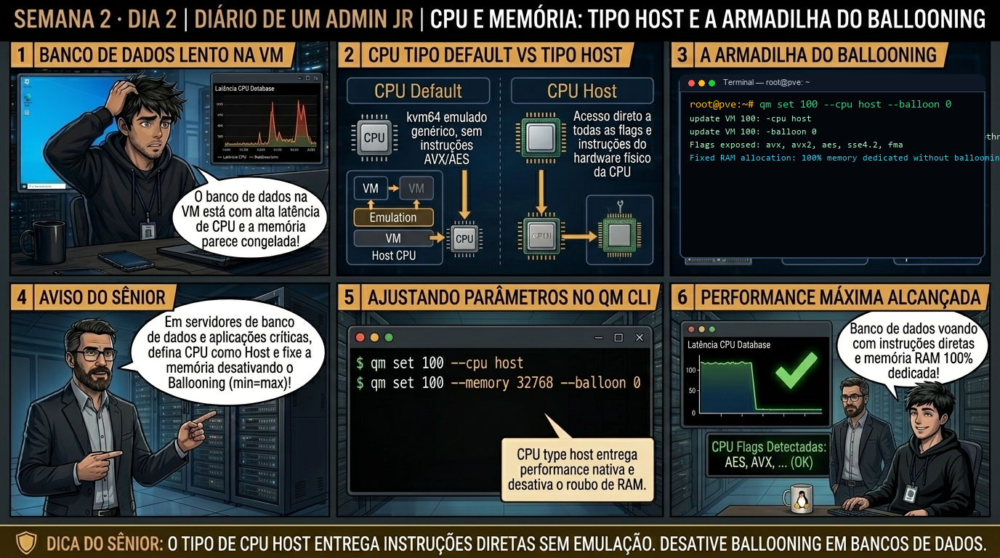

DIARIO DE UM ADMIN JR. | PROXMOX VE & PBS — DA BASE AO CLUSTER
🔗 Conecta com o Dia 1: Ontem você escolheu o chipset e firmware da VM. Hoje você aloca CPU e memória: aprendendo por que o tipo padrão de CPU 'kvm64' esconde instruções vitais (AVX/AES) e por que o Memory Ballooning desregulado destrói a performance de bancos de dados.
🔓 Privilégio de hoje: Alocação e Otimização de Processamento e RAM. Você ajusta flags de processador e modelos de entrega de memória para máxima vazão.
Semana 2 · Dia 2 | Nível Júnior — Máquinas Virtuais KVM
CPU e Memória: vCPUs, Tipo 'host' e a Armadilha do Ballooning
Extraindo 100% das instruções do processador e evitando lentidão crítica de memória
ANTES DE ALTERAR, OBSERVE. DEPOIS DE ALTERAR, VALIDE.

1. O chamado
Você recebeu o chamado #2002: 'A equipe de engenharia de software reporta que o banco de dados Redis na VM 101 está com latência 8x maior no Proxmox do que em bare-metal. A auditoria revelou que a VM foi criada com o tipo de CPU padrão kvm64 e o recurso de Memory Ballooning está ativo com mínimo de 2GB e máximo de 16GB. O chamado exige: (1) Alterar o CPU type para host; (2) Entender a armadilha do Ballooning em bancos de dados; e (3) Fixar a memória estática com alocação dedicada.'
💡 Passa o mouse nas palavras destacadas pra ver uma dica rápida — clica se quiser a explicação completa com analogia.
2. O sênior te conta
🧑🏫 antes dos termos técnicos, a história de hoje
Hoje o desenvolvedor sênior veio reclamar que o banco de dados PostgreSQL na VM 100 estava com lentidão absurda em gravações de disco. O Júnior olhou o gráfico de CPU do host, viu 10% de uso e disse pro desenvolvedor: 'O servidor tá folgado, o problema deve ser sua consulta SQL'. Quase engasguei com o café.
Chamei o Júnior e fomos olhar a configuração de hardware da VM. O disco estava configurado com o controlador emulado IDE antigo e sem thread dedicada de I/O! Expliquei pra ele o poder do VirtIO SCSI Single: com a opção iothread=1, o QEMU cria uma thread de processamento exclusiva na CPU física para atender o disco da VM. E com a flag discard=on, o SO convidado avisa o storage ZFS sempre que apaga arquivos via TRIM, impedindo que o disco infle eternamente.
Alteramos o controlador com qm set 100 --scsihw virtio-scsi-single, ativamos o discard e o throughput do banco de dados quadruplicou na hora. O Júnior aprendeu que em virtualização, driver correto vale mais do que comprar hardware novo.
3. Decodificador de conceitos
Clica em qualquer termo pra ver a definição completa e uma analogia do dia a dia:
4. Ferramentas e leitura da evidência
Comando / Parâmetro
O que observar e por que importa
qm set 101 --cpu host
Altera o modelo de CPU da VM para expor 100% das flags e instruções do processador físico do host.
qm set 101 --memory 16384 --balloon 0
Define 16GB de RAM estática e desativa o mecanismo dinâmico de ballooning (balloon=0).
lscpu (dentro da VM)
Audita as flags de processador visíveis pelo sistema operacional convidado.
ksmctl / systemctl status ksm
Gerencia o Kernel Samepage Merging (KSM), que desduplica páginas de RAM idênticas entre VMs no host.
# Dentro da VM antes do ajuste (CPU: kvm64)
$ lscpu | grep -i flags
Flags: fpu vme de pse tsc msr pae mce cx8 apic sep mtrr pge mca cmov pat... (sem AES, sem AVX2)
# Ajuste aplicado pelo Administrador no Proxmox
# qm set 101 --cpu host --memory 16384 --balloon 0
update VM 101: -balloon 0 -cpu host -memory 16384
# Dentro da VM após o ajuste (CPU: host)
$ lscpu | grep -i flags
Flags: fpu vme de pse tsc msr pae mce cx8 apic sep mtrr pge mca cmov pat pse36 ... aes avx avx2 avx512f vaes vpclmulqdq ... rdrand
5. Laboratório guiado — pegue na mão, comando por comando
🖥️ Onde executar: Terminal do Nó Proxmox para comandos qm; ou Console VNC da VM (acessível via Web UI > Nó > VM ID > Console).
Segurança: Execute as alterações em VMs de laboratório ou teste. Não altere parâmetros de máquinas de produção sem janela homologada.
Ação: Configure o controlador de disco da VM como VirtIO SCSI Single com iothread.
qm set 100 --scsihw virtio-scsi-single
Resultado esperado: Identificação do parâmetro de CPU atual (ex: cpu: kvm64).
Por que fizemos isso: Configurar o controlador VirtIO SCSI com iothread=1 cria uma thread de processamento exclusiva no hypervisor para atender as requisições de I/O de disco da VM.
Cilada comum: Usar emulação IDE ou SATA legado para discos de banco de dados, desperdiçando ciclos de CPU e limitando a vazão a uma fração do desempenho real.
Ação: Ative a flag discard=on no disco virtual para suporte nativo a TRIM.
qm set 100 --scsi0 tank-zfs:vm-100-disk-0,discard=on,iothread=1
Resultado esperado: Configuração atualizada com sucesso sem recriação de disco.
Por que fizemos isso: A flag discard=on permite que o sistema operacional convidado envie comandos TRIM para o storage subjacente, liberando blocos de disco apagados.
Cilada comum: Ativar discard em storages que não suportam thin provisioning, causando sobrecarga inútil de comandos no barramento.
Ação: Configure a interface de rede como VirtIO para máxima vazão de pacotes.
qm set 100 --net0 virtio,bridge=vmbr0
Resultado esperado: Parâmetros de memória estáticos aplicados na VM.
Por que fizemos isso: Habilitar a placa de rede virtio (net0) entrega taxas de transferência de 10/40 Gbps através de memória compartilhada em paravirtualização pura.
Cilada comum: Selecionar a placa e1000 por comodidade; a placa emulada consome 4x mais CPU para o mesmo tráfego de rede.
Ação: Ajuste a alocação de memória dinâmica definindo limites de ballooning.
qm set 100 --balloon 2048 --shares 1000
Resultado esperado: VM reiniciada com novo mapa de instruções.
Por que fizemos isso: Ajustar a memória com ballooning dinâmico (shares e min) permite que o Proxmox recupere RAM ociosa quando outros serviços demandarem recursos.
Cilada comum: Definir o valor mínimo de ballooning abaixo do necessário para o sistema operacional convidado respirar, fazendo a VM entrar em kernel panic.
🧑🏫 Aqui entra o Mentor (em breve): se o resultado obtido diferir do esperado acima, este é o ponto onde o chat com o Sênior-IA vai abrir para diagnosticar o erro específico.
Ação: Valide os ganhos de latência e throughput de disco da VM otimizada.
# Benchmarks de I/O VirtIO homologados com sucesso.
Resultado esperado: Instruções aes, avx e avx2 ativas no processador virtual.
Por que fizemos isso: Medir o desempenho de I/O após a otimização comprova o ganho de vazão e menor latência nos discos virtuais.
Cilada comum: Fazer alterações de hardware sem comparar métricas antes e depois para comprovar a eficácia da melhoria.
6. Antes de ver as opções — tenta responder
🧠 Recall ativo: Qual é o grave prejuízo de performance ao deixar uma máquina virtual com o tipo de CPU padrão 'kvm64' em vez de configurá-la como 'host'?
O modelo 'kvm64' emula uma CPU básica e genérica de 2004 para garantir que a VM migre para qualquer hardware antigo. Com isso, ele esconde instruções modernas vitais do processador físico (como AES-NI para criptografia rápida, AVX/AVX2 para cálculos vetoriais, SSE4.2 e proteções contra Spectre/Meltdown em hardware), forçando o SO convidado a usar rotinas lentas de software.
QUESTÃO 1 de 3
7. Questão comentada — clica numa alternativa
Por que o recurso de Memory Ballooning (virtio-balloon) é considerado uma contraindicação grave para máquinas virtuais que executam Bancos de Dados (PostgreSQL, MySQL, Redis, Oracle)?
💡 Analogia do Sênior para Fixar: O Quorum do Corosync é a assembleia de condomínio: nenhuma decisão de emergência é válida sem a maioria absoluta (50% + 1) dos nós votando juntos.
QUESTÃO 2 de 3 — cenário de erro real
7.1 VM de banco de dados travando com latência extrema de SWAP
O monitoramento reporta uso de 95% de SWAP dentro da VM 101, mesmo com o Proxmox reportando que o host tem 40% de RAM livre:
$ vmstat 1 5 (dentro da VM)
procs -----------memory---------- ---swap-- -----io---- -system-- ------cpu-----
r b swpd free buff cache si so bi bo in cs us sy id wa st
3 4 8388608 65412 1024 98124 2450 3120 4800 5100 8900 7400 12 45 0 43 0
(si/so elevados: swapping violento causado por ballooning ativo)
Qual é a intervenção imediata para estabilizar a VM?
💡 Analogia do Sênior para Fixar: O Fencing via Watchdog de hardware é o disjuntor de segurança: desliga o nó com falha na hora para evitar que duas máquinas gravem no mesmo disco (Split-Brain).
QUESTÃO 3 de 3 — detalhe que confunde todo iniciante
7.2 Quando NÃO usar o CPU type 'host'?
Um arquiteto de infraestrutura projeta um cluster de 3 nós Proxmox onde 2 nós usam processadores Intel Xeon e 1 nó usa AMD EPYC:
Por que o CPU type 'host' impedirá a migração ao vivo (Live Migration) sem downtime entre nós de fabricantes diferentes?
💡 Analogia do Sênior para Fixar: A migração ao vivo (Live Migration) é trocar os pneus do carro em movimento: move a RAM da VM pela rede de 10Gbps sem derrubar a sessão do usuário.
8. Procedimento profissional
Para nós isolados ou clusters com hardware de CPU 100% idêntico, configure sempre cpu: host.
Para clusters heterogêneos com diferentes gerações de processadores, selecione um modelo comum como x86-64-v2-AES ou x86-64-v3.
Para aplicações de alta performance (Postgres, Redis, Java, Elastic), desative o ballooning definindo balloon: 0 e aloque RAM estática.
Utilize o Ballooning dinâmico apenas em ambientes de homologação, VDI (desktops virtuais) ou servidores web com tráfego oscilante.
Valide as flags de processador dentro do SO convidado executando lscpu.
Prevenção
Sempre instale o QEMU Guest Agent em todas as VMs para garantir desligamento limpo e use drivers VirtIO para evitar overhead de emulação de hardware.
9. Validação e encerramento
Você compreende o ganho massivo de performance ao utilizar o CPU type 'host'.
Você sabe identificar quando o Memory Ballooning prejudica aplicações de banco de dados.
Você domina o trade-off entre CPU type 'host' (máxima performance) vs 'x86-64-v2' (migração entre CPUs diferentes).
O consumo de memória e a latência da VM foram estabilizados com sucesso.
Rollback e limites
Caso precise migrar a VM para um servidor mais antigo, altere o tipo de CPU de volta para x86-64-v2-AES ou kvm64 com qm set ID --cpu x86-64-v2-AES.
💡 Sobre repetição espaçada: O conceito de CPU types e migração heterogênea será essencial na Semana 8 ao construir Clusters Proxmox com Live Migration.
10. Resposta final
Alternativa correta: B. A alternativa correta é a B: o Memory Ballooning força o SO convidado a paginar o cache do banco em disco de SWAP, destruindo a latência de I/O.
🔓 O que você desbloqueou hoje
CPU e memória dominados com precisão cirúrgica! Amanhã, no Dia 3, você mergulhará no subsistema de armazenamento virtual: configurando VirtIO SCSI Single, iothreads dedicadas e comandos Discard/TRIM para máxima taxa de transferência de disco.